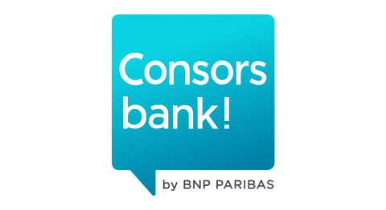
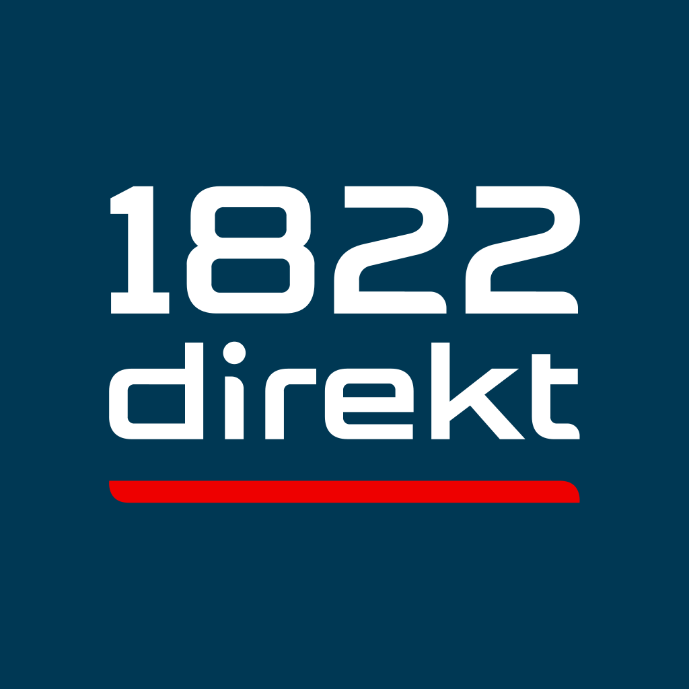

Selbstständige & Freelancer
Einnahmen und Ausgaben für die EÜR in Excel sortieren oder als CSV in Lexware Office oder sevDesk übernehmen, auch für Konten ohne Online-Anbindung.
Für Selbstständige & Buchhaltung
Der Auszug ist da. Die Tabelle fehlt. Machen Sie aus Ihren Bank-PDFs bearbeitbare Umsätze für Excel oder DATEV – mit Saldoprüfung und ohne Ihre Dateien hochzuladen.
Kein Datei-Upload. Kein Konto. 3 Seiten gratis.
Kontoauszug 10 / 2026
Geschäftskonto · DE•• •••• •••• 4711
| Datum | Buchungstext | Betrag |
|---|---|---|
| 01.10. | Stadtwerke | −84,00 |
| 01.10. | Rechnung 0815 | +2.400,00 |
| 02.10. | Bürobedarf | −12,99 |
| 05.10. | Büromiete | −950,00 |
Saldo abgeglichen0,00 € Differenz
IHR ARBEITSPLATZ
Wählen Sie den PDF-Auszug aus Ihrem Onlinebanking. Sie sehen die erkannten Umsätze und die Saldoprüfung, bevor Sie exportieren.
Am besten verwenden Sie die PDF direkt aus Ihrem Onlinebanking. Fragen zum Dateiformat?
PDF hier ablegen
oder
Mehrere Dateien auf einmal möglich. PDFs aus dem Onlinebanking (mit Textebene), keine eingescannten Papierauszüge.
Wird nur in diesem Browser verarbeitet
Guthaben: – Seiten
Demo und Vorschau bleiben vollständig lokal. Beim Export wird das Guthaben online geprüft: nur zufällige Kennung, Seitenzahl und Vorgangs-ID – keine Datei, Buchungsdaten oder Dateiprüfsumme. Mehr zum Datenschutz.
Vorbelegt: Bankkonto 1200, Verrechnungskonto 1590 (SKR03-Beispiel). Bitte mit Ihrer Kanzlei abstimmen.
Kontoumsätze sind vertraulich. Deshalb findet die gesamte Umwandlung auf Ihrem Gerät statt. Sie geben weder Ihre Bankzugangsdaten ein noch laden Sie Ihren Auszug auf einen Server.
Die PDF wird nur im Arbeitsspeicher Ihres Browsers gelesen. Schließen Sie den Tab, ist sie weg. Keine Cookies, keine Analyse, keine Werbung.
Sobald der Konverter geladen ist, lesen und prüfen Sie Ihre PDF lokal. Für neue Exportbuchungen braucht die Guthabenverwaltung eine Verbindung.
Nur wenn Sie zusätzliche Seiten kaufen, wechseln Sie zu Stripe. Ihr Kontoauszug wird dabei nicht an den Zahlungsdienst übergeben.
Prüfen Sie erkannte Buchungen und Salden, bevor Sie exportieren oder zusätzliche Seiten kaufen.
Laden Sie den Auszug wie gewohnt im Onlinebanking herunter und ziehen Sie ihn in das Feld. Mehrere Monate auf einmal sind kein Problem.
Jede Buchung wird gelesen, dann wird nachgerechnet: Anfangssaldo plus alle Umsätze muss den Endsaldo ergeben. Grün heißt rechnerisch ausgeglichen, Rot zeigt die Differenz. Bitte prüfen Sie auch die Buchungstexte.
Wählen Sie das Format für Ihr Programm. Die Datei entsteht in Ihrem Browser und landet in Ihrem Download-Ordner.
Sehen Sie Vorschau, Saldoprüfung und CSV-Export mit erfundenen Daten. Das Video ist ohne Ton und mit eingeblendeten Untertiteln.
Wählen Sie Ihre Bank für Hinweise zum PDF-Export. Oder starten Sie direkt: Die Bank wird beim Einlesen automatisch erkannt.

Consorsbank Targobank Norisbank
1822direkt C24 Trade RepublicN26 und Finom sind mit echten Auszügen geprüft. Für die übrigen hier genannten Banken verwenden wir synthetische Testlayouts mit erfundenen Daten. Änderungen am Banklayout können die Erkennung beeinflussen. Prüfen Sie deshalb die Buchungen und den Saldo Ihres Auszugs vor der Weiterverwendung.
Auch andere Banken können über die allgemeine Erkennung funktionieren. Die kostenlose Vorschau zeigt Ihnen das Ergebnis für Ihre konkrete Datei.
Banknamen und Logos dienen der Zuordnung. Ein unabhängiges Werkzeug. Keine Partnerschaft mit den genannten Banken.
Einnahmen und Ausgaben für die EÜR in Excel sortieren oder als CSV in Lexware Office oder sevDesk übernehmen, auch für Konten ohne Online-Anbindung.
Ältere Auszüge nachbuchen, Lücken schließen, Konten ohne Schnittstelle importieren. Die Saldoprüfung macht Differenzen sichtbar.
Mandanten-PDFs direkt als DATEV-Buchungsstapel mit Berater- und Mandantennummer, ohne Abtippen. Auszugsdaten verlassen den Kanzlei-Rechner nicht.
Sie führen die Vereinskasse? Die Anleitung für Vereinskassen zeigt den Weg vom PDF-Auszug zum Kassenbuch in Excel – mit einem kostenlosen Beispiel zum Ausprobieren.
Kein Abo, kein Konto. Sie zahlen nur für Seiten, die Sie exportieren. Dieselbe Datei erneut zu exportieren kostet nichts.
Gratis
3 Seiten
Seitenpaket · 9 €
50 Seiten
Endpreis, gemäß § 19 UStG ohne Umsatzsteuer. Bezahlung über Stripe. Nach bestätigter Zahlung erhalten Sie den Code auf der Danke-Seite und zusätzlich per E-Mail. Bei verzögerter Zahlung erst nach deren Bestätigung. Es gelten die AGB und die Widerrufsbelehrung.
Nein. Die PDF und die erkannten Buchungen werden ausschließlich auf Ihrem Gerät verarbeitet. Die Guthabenverwaltung erhält beim Export nur eine zufällige Kennung, die Seitenzahl und eine zufällige Vorgangs-ID. Datei, Dateiname, IBAN, Buchungen und Dateiprüfsumme werden nicht übertragen. Demo und Vorschau benötigen keine Guthabenverbindung. Mehr erfahren Sie im Datenschutz.
Die Liste mit dem jeweiligen Teststand steht im Abschnitt Banken. Auszüge anderer Banken liest der generische Modus. Ob alles erkannt wurde, sehen Sie an der Saldoprüfung. Voraussetzung ist eine PDF aus dem Onlinebanking mit Textebene.
Der Konverter erzeugt einen DATEV-Buchungsstapel im Format EXTF 700. Beraternummer, Mandantennummer, Bankkonto und Gegenkonto stellen Sie im Konverter unter „DATEV-Einstellungen“ ein (vorbelegt: SKR03, 1200 und 1590). Die Buchungen landen auf dem Verrechnungskonto und werden dort weiter kontiert. Prüfen Sie den ersten Import bitte mit einem kurzen Auszug, wie bei jeder neuen Schnittstelle.
Ja. Viele Kanzleien arbeiten mit DATEV und nehmen den Buchungsstapel direkt an. Alternativ ist die CSV für jede Tabellenkalkulation lesbar. Kanzleien können den Konverter auch selbst für Mandanten-PDFs nutzen. Weil nichts hochgeladen wird, braucht es dafür keinen Auftragsverarbeitungsvertrag mit uns. Bitte klären Sie das im Zweifel mit Ihrem Datenschutzbeauftragten.
Beide Programme importieren Kontoumsätze als CSV: Lexware Office über ein Bankkonto ohne Verbindung („Umsätze importieren“), sevDesk über ein Datenimport-Konto. Beim ersten Import ordnen Sie die Spalten einmal zu. Die Beträge haben ein Vorzeichen, Ausgaben werden also richtig als Ausgaben erkannt.
Lexware Office prüft beim CSV-Import nicht auf Dubletten. Importieren Sie jeden Zeitraum deshalb nur einmal. Den Import in jedes Programm haben wir noch nicht selbst getestet. Probieren Sie es zuerst mit einem kurzen Auszug.
Dann geht die Saldoprüfung nicht auf und wird rot, mit der genauen Differenz. CAMT und MT940 sind dann gesperrt, CSV und DATEV gibt es nur nach Rückfrage. Prüfen Sie den Export bitte trotzdem vor dem Import. Die Umwandlung ersetzt keine Kontrolle durch Sie oder Ihre Kanzlei.
Jede PDF-Seite eines Auszugs, den Sie exportieren. Das Ansehen und Prüfen ist kostenlos. Exportieren Sie dieselbe Datei erneut, zum Beispiel in ein anderes Format, zählt sie nicht noch einmal.
Derzeit nicht. Der Konverter braucht eine PDF mit Textebene, wie sie das Onlinebanking erzeugt. Ein Scan ist nur ein Bild. Texterkennung (OCR) direkt im Browser ist in Prüfung.
3 Seiten gratis. Ohne Anmeldung, ohne Upload.
| Buchung | Wert | Text | Betrag |
|---|